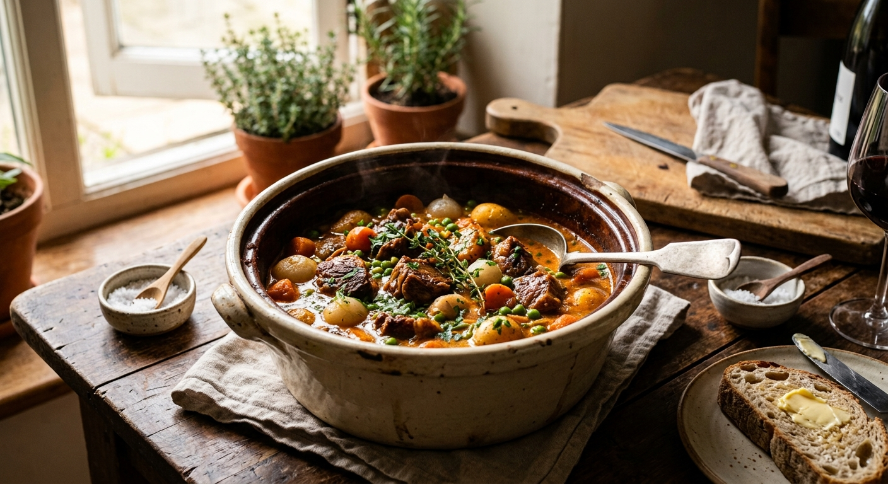

Mijoté avec patience en cocotte de fonte, cet agneau fondant se délaie dans un jus ambré, richement parfumé de thym, de romarin et d'un trait de vin blanc. Les légumes racines rustiques, carottes, navets, oignons, y apportent leur douceur sucrée et réconfortante. Le gras délicat du navarin enrobe la cuillère, promettant une viande savoureuse qui se détache à la simple pression de la fourchette. Une ode à la cuisine de terroir, généreuse, authentique et chaleureusement familiale.
Détailler délicatement l’épaule d’agneau en cubes égaux de 50 g. Les assaisonner généreusement de sel et de poivre, les saisir à feu vif dans une cocotte dorée à l'huile d'olive. Dès que la viande arbore une belle croûte ambrée, incorporer les oignons émincés en fines lamelles jusqu'à ce qu'ils blondissent. Saupoudrer de farine.
Incorporer le concentré de tomate en mélangeant soigneusement, puis mouiller au vin blanc. Compléter si nécessaire avec un trait d'eau pour immerger l'agneau à fleur. Ajouter le bouquet garni et la gousse d’ail en chemise. Couvrir hermétiquement et laisser mijoter à feu doux sans remuer pendant une heure.
Eplucher, épépiner et découper en dés les 6 tomates.
Faire cuire les pommes de terre en robe des champs. elles doivent rester bien fermes.
Egoutter, éplucher, puis les tailler en morceaux de taille moyenne
Eplucher les navets et les carottes et les couper en rondelles. Les cuire dans de l’eau
Cuire les haricots et les petits pois à l’eau bouillante salée
Une fois la viande parfaitement tendre, prélever les morceaux et passer la sauce au chinois pour dégraisser. Réintroduire l'agneau et sa sauce dans la cocotte, ajouter les dés de tomates fraîches, les navets et les carottes. Laisser mijoter 10 minutes.
Beurrer les pommes de terre et les faire dorer joliment.
Ajouter les pommes de terre dorées, les haricots et les petits pois, et laisser mijoter quelques minutes.
Goûter, assaisonner, transferer dans une grande terrine. Déposer le persil en surface avant de servir.